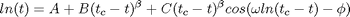
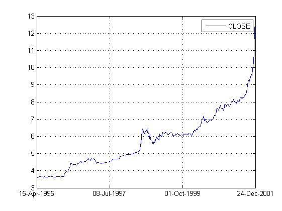
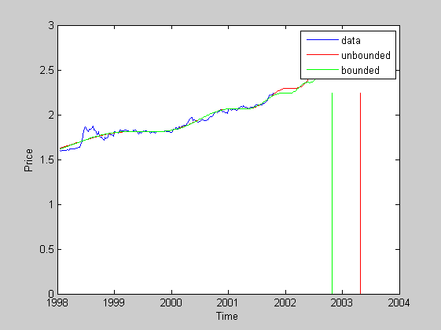

Script File to estimate log-periodic fit to USDZAR rand crash using MCMC
Data is USD/ZAR over 15000 days starting in 1960
Function is:

From Sornette and Johansen, Quantitative Finance, 1, 452, 2001
Fitting Parameters are: (A, B, C, beta, t_c, w, phi)
dates are given in days since AD began but converted to approximate years using 365.25 d/yr
Author: Tim Gebbie
Contents
Clear the workspace
clear all;
clc;
Set initial conditions for parameter chain vector p
(A,B,C,BETA,TC,OMEGA,PHI)
para_str ={'A','B','C','\beta','t_c','\omega','\phi'};
epoch = '28-Jan-1998::31-Oct-2001';
p0 = [3.5, -3,2.27,0.35,2003,7,-14]; % initial parameters
lb = [ 0, -10, 0, -10, 2000, 0, 0];
ub = [10, 10, 10, 10, 2005, 20, 20];
Load the data
ZAR=fints(inet('hist','usdzar','CLOSE','16-04-95','25-12-01','W')); % load data/workspace_zar.mat; % load file
Prepare the data
plot(ZAR); rawdata = fts2mat(ZAR(epoch).CLOSE,1); ytilde = log(rawdata(:,2)); % column data of ln(ZAR/USD) exchange rate (including NAN missing data) t = rawdata(:,1)./ 365.25; % dates for the data (days since AD began) convert days to years
Estimate the parameters
[p1,resn,res,eflag] = lsqerr(@logp,t,p0,ytilde); [p2,resn,res,eflag] = lsqerr(@logp,t,p0,ytilde,lb,ub);
Norm of First-order
Iteration Func-count f(x) step optimality CG-iterations
0 8 2369.53 3.37e+003
1 16 145.288 1.55891 320 3
2 24 15.0967 0.882344 14.9 2
3 32 11.552 1.62944 155 3
4 40 2.02241 0.407361 4.11 3
5 48 1.51987 0.814722 8.83 3
6 56 0.620285 0.612989 17 3
7 64 0.497965 1.28491 6.03 3
8 72 0.437489 0.395385 3.25 3
9 80 0.437489 0.966392 3.25 3
10 88 0.413034 0.241598 1.73 0
11 96 0.400821 0.483196 1.19 3
12 104 0.380734 0.375564 0.919 2
13 112 0.377798 0.186909 0.221 3
14 120 0.368315 0.483196 0.0842 3
15 128 0.356126 0.884006 1.06 3
16 136 0.345238 0.234002 0.177 3
17 144 0.333527 0.51961 0.656 3
18 152 0.326426 0.107603 0.0991 3
19 160 0.313826 0.79823 0.401 3
20 168 0.295758 0.195327 0.185 3
21 176 0.293213 0.101025 0.159 3
22 184 0.290337 0.0734224 0.173 3
23 192 0.287918 0.12765 0.132 3
24 200 0.284369 0.0754789 0.347 3
25 208 0.282248 0.126454 0.092 3
26 216 0.279191 0.0641005 0.215 3
27 224 0.277408 0.129427 0.149 3
28 232 0.275181 0.0545242 0.0752 3
29 240 0.274433 0.0714936 0.104 3
30 248 0.273547 0.0333841 0.0321 3
31 256 0.273102 0.067023 0.151 3
32 264 0.272573 0.0258246 0.0281 2
33 272 0.272326 0.0445723 0.0397 3
34 280 0.272136 0.0136838 0.0077 3
35 288 0.272097 0.012143 0.0196 3
36 296 0.272072 0.00547135 0.0202 3
37 304 0.272056 0.00774986 0.00786 3
38 312 0.27204 0.00423804 0.0106 3
39 320 0.272028 0.0104341 0.00906 3
Optimization terminated: relative function value
changing by less than OPTIONS.TolFun.
Norm of First-order
Iteration Func-count f(x) step optimality CG-iterations
0 8 3675.41 1.41e+004
1 16 820.117 0.861931 1.34e+003 1
2 24 284.471 0.859302 242 1
3 32 77.7018 1.03365 194 3
4 40 21.3969 0.67415 135 3
5 48 5.05505 0.465975 70.2 3
6 56 1.67126 0.287099 28.2 3
7 64 0.472903 0.228191 19 3
8 72 0.440731 0.551561 14.8 3
9 80 0.440731 4.3594 14.8 3
10 88 0.440731 1.08985 14.8 0
11 96 0.38265 0.272462 30.1 0
12 104 0.357304 0.162687 8.16 3
13 112 0.316767 0.116219 5.01 2
14 120 0.31024 0.0859513 0.524 3
15 128 0.299597 0.0466117 3.14 3
16 136 0.291167 0.0714446 3.8 3
17 144 0.284789 0.0302886 0.833 3
18 152 0.28133 0.0538974 5.61 3
19 160 0.276991 0.0248294 2.34 3
20 168 0.274485 0.0462055 1.01 3
21 176 0.270742 0.0173353 1.05 3
22 184 0.269601 0.0207961 1.8 3
23 192 0.269208 0.00521743 0.24 3
24 200 0.268272 0.0438475 1.48 3
25 208 0.267982 0.00657219 0.169 3
26 216 0.267847 0.00676033 0.23 3
27 224 0.267726 0.00838312 0.283 3
28 232 0.267601 0.0059624 0.104 3
29 240 0.267497 0.0093907 0.345 3
30 248 0.267376 0.0057054 0.0966 3
31 256 0.267283 0.0087499 0.322 3
32 264 0.267173 0.00553631 0.132 3
33 272 0.267094 0.00714216 0.224 3
34 280 0.266943 0.0107401 1 3
35 288 0.266816 0.00583546 0.0554 3
36 296 0.265571 0.131256 2.35 3
37 304 0.264626 0.00587682 0.0711 3
38 312 0.264314 0.0401052 0.432 3
39 320 0.264167 0.00429375 0.123 3
40 328 0.264115 0.00735627 0.243 3
41 336 0.264058 0.00262375 0.13 3
42 344 0.264019 0.00591237 0.197 3
43 352 0.263544 0.0572359 0.101 3
44 360 0.263209 0.0072899 0.0705 3
45 368 0.263188 0.00321918 0.231 3
46 376 0.26278 0.0543331 0.28 3
47 384 0.262467 0.00763478 0.248 3
48 392 0.262447 0.00209052 0.0464 3
49 400 0.26239 0.00698477 0.743 3
50 408 0.262343 0.00249407 0.0923 3
51 416 0.26231 0.00492609 0.62 3
52 424 0.262277 0.0022485 0.0841 3
53 432 0.262244 0.00517919 0.656 3
54 440 0.26221 0.00214037 0.0869 3
55 448 0.262176 0.00511077 0.666 3
56 456 0.262142 0.00208144 0.0876 3
57 464 0.262108 0.00516637 0.678 3
58 472 0.262073 0.00203375 0.0879 3
59 480 0.262039 0.00525613 0.69 3
60 488 0.262004 0.00198843 0.088 3
61 496 0.26197 0.00536134 0.7 3
62 504 0.261935 0.00194332 0.0877 3
63 512 0.261901 0.00545686 0.709 3
64 520 0.261866 0.00189761 0.0872 3
65 528 0.261832 0.00553251 0.715 3
66 536 0.261797 0.00185147 0.0866 3
67 544 0.261764 0.00558059 0.719 3
68 552 0.261729 0.00180505 0.0858 3
69 560 0.261696 0.00559898 0.72 3
70 568 0.261662 0.00175875 0.085 3
71 576 0.261629 0.00558746 0.719 3
72 584 0.261595 0.00171282 0.084 3
73 592 0.261563 0.0055479 0.716 3
74 600 0.26153 0.00166757 0.083 3
75 608 0.261499 0.00548388 0.712 3
76 616 0.261467 0.00162317 0.082 3
77 624 0.261436 0.00539906 0.706 3
78 632 0.261405 0.00157984 0.081 3
79 640 0.261375 0.00529779 0.699 3
80 648 0.261345 0.00153767 0.08 3
81 656 0.261316 0.00518348 0.691 3
82 664 0.261287 0.00149677 0.079 3
83 672 0.261259 0.00505985 0.682 3
84 680 0.26123 0.00145716 0.078 3
85 688 0.261203 0.00492973 0.674 3
86 696 0.261175 0.0014189 0.077 3
87 704 0.261149 0.00479565 0.665 3
88 712 0.261123 0.00138195 0.0761 3
89 720 0.261097 0.00465922 0.656 3
90 728 0.261071 0.00134634 0.0751 3
91 736 0.261047 0.00452196 0.647 3
92 744 0.261022 0.00131201 0.0743 3
93 752 0.260998 0.00438485 0.639 3
94 760 0.260974 0.00127896 0.0734 3
95 768 0.260951 0.00424861 0.63 3
96 776 0.260927 0.00124712 0.0725 3
97 784 0.260905 0.0041135 0.622 3
98 792 0.260882 0.0012165 0.0717 3
99 800 0.260861 0.00398024 0.615 3
100 808 0.260838 0.00118701 0.071 3
101 816 0.260817 0.00384849 0.607 3
102 824 0.260796 0.00115866 0.0702 3
103 832 0.260775 0.00371897 0.6 3
104 840 0.260754 0.00113137 0.0695 3
105 848 0.260735 0.00359113 0.593 3
106 856 0.260714 0.00110514 0.0688 3
107 864 0.260695 0.00346592 0.587 3
108 872 0.260675 0.0010799 0.0681 3
109 880 0.260656 0.00334263 0.581 3
110 888 0.260637 0.00105565 0.0675 3
111 896 0.260618 0.00322163 0.575 3
112 904 0.2606 0.00103232 0.0668 3
113 912 0.260582 0.00310296 0.57 3
114 920 0.260563 0.0010099 0.0662 3
115 928 0.260546 0.0029867 0.565 3
116 936 0.260527 0.000988336 0.0657 3
117 944 0.26051 0.00287279 0.56 3
118 952 0.260493 0.00096762 0.0651 3
119 960 0.260476 0.0027618 0.556 3
120 968 0.260458 0.000947695 0.0646 3
121 976 0.260442 0.00265323 0.552 3
122 984 0.260425 0.000928547 0.0641 3
123 992 0.260408 0.0025476 0.549 3
124 1000 0.260392 0.000910138 0.0636 3
125 1008 0.260376 0.00244484 0.546 3
126 1016 0.260359 0.000892438 0.0631 3
127 1024 0.260343 0.00234516 0.544 3
128 1032 0.260327 0.000875421 0.0627 3
129 1040 0.260311 0.00224882 0.542 3
130 1048 0.260295 0.00085906 0.0622 3
131 1056 0.26028 0.00215599 0.541 3
132 1064 0.260264 0.000843332 0.0618 3
133 1072 0.260248 0.00206689 0.54 3
134 1080 0.260233 0.000828216 0.0614 3
135 1088 0.260217 0.00198197 0.541 3
136 1096 0.260201 0.000813692 0.0611 3
137 1104 0.260186 0.00190168 0.542 3
138 1112 0.26017 0.000799746 0.0607 3
139 1120 0.260155 0.00182676 0.545 3
140 1128 0.260139 0.000786371 0.0604 3
141 1136 0.260124 0.00175806 0.548 3
142 1144 0.260108 0.00077357 0.0601 3
143 1152 0.260092 0.00169704 0.554 3
144 1160 0.260076 0.00076136 0.0598 3
145 1168 0.26006 0.00164576 0.562 3
146 1176 0.260044 0.000749792 0.0595 3
147 1184 0.260027 0.00160788 0.573 3
148 1192 0.26001 0.000738966 0.0593 3
149 1200 0.259993 0.00159004 0.589 3
150 1208 0.259975 0.000729117 0.0591 3
151 1216 0.259957 0.001605 0.612 3
152 1224 0.259938 0.000720803 0.059 3
153 1232 0.259917 0.00168126 0.648 3
154 1240 0.259896 0.000715673 0.0589 3
155 1248 0.259872 0.00189031 0.703 3
156 1256 0.259847 0.000713085 0.0596 3
157 1264 0.259807 0.00289266 0.811 3
158 1272 0.259767 0.00081601 0.0583 3
159 1280 0.259682 0.00542997 0.495 3
160 1288 0.259613 0.00141501 0.0413 3
161 1296 0.259609 0.000604116 0.141 3
Optimization terminated: relative function value
changing by less than OPTIONS.TolFun.
Find the best theory
simulation range
t1 = [t(1):mean(diff(t)):min(p1(5),p2(5))];
% define theoretical prediction
best_theory(:,1) = logp(t1(:),p1);
best_theory(:,2) = logp(t1(:),p2);
Plot the best theory
figure; plot(t, ytilde); xlabel('Time'); ylabel('Price'); line(t1,best_theory(:,1),'Color','r'); line(t1,best_theory(:,2),'Color','g'); % plot crash times line([p1(5),p1(5)],[0,max(ytilde)],'Color','r'); line([p2(5),p2(5)],[0,max(ytilde)],'Color','g'); legend('data','unbounded','bounded'); % Check mixing/convergence using R-statistic (Verde et al)